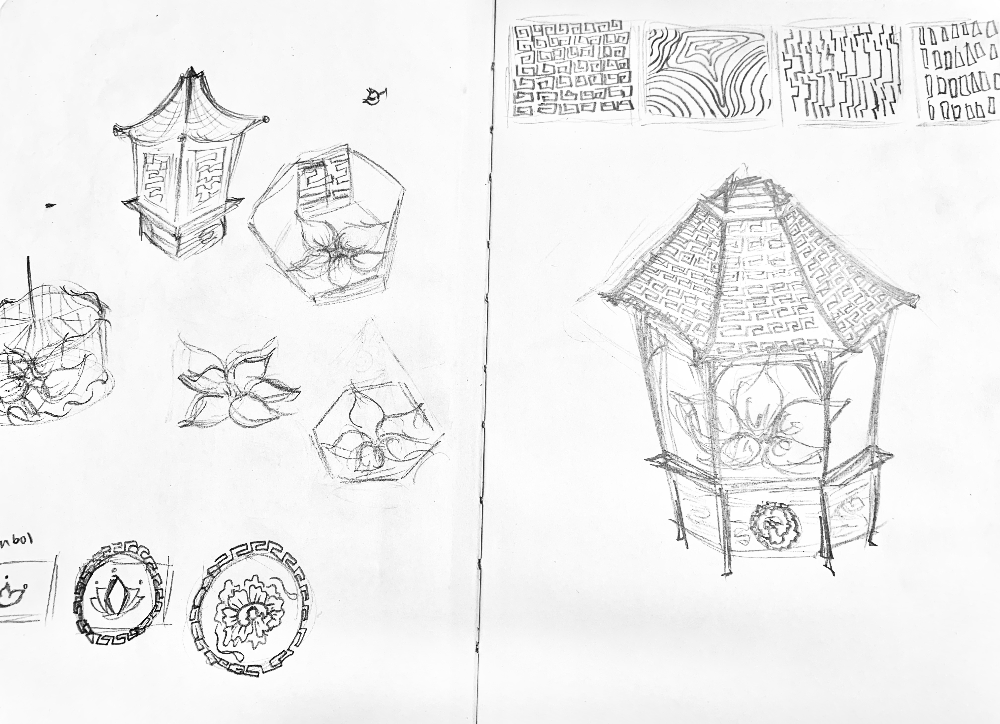
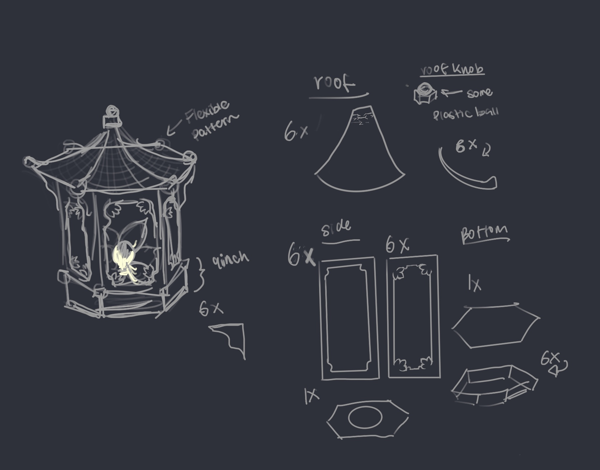
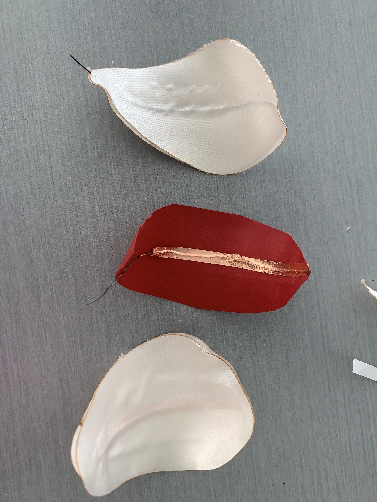
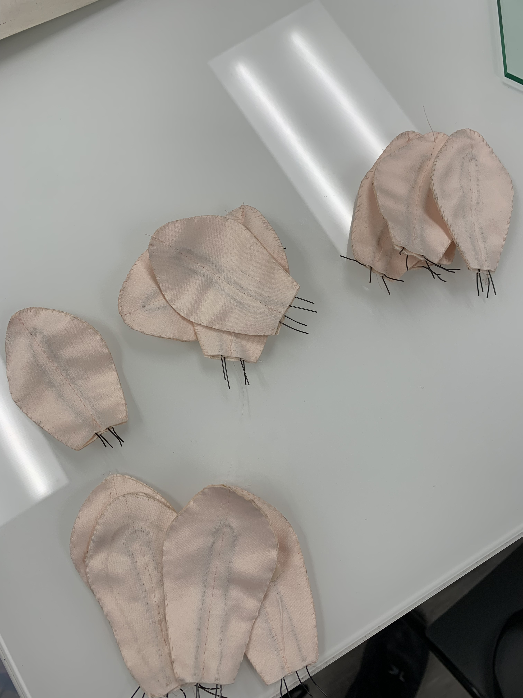
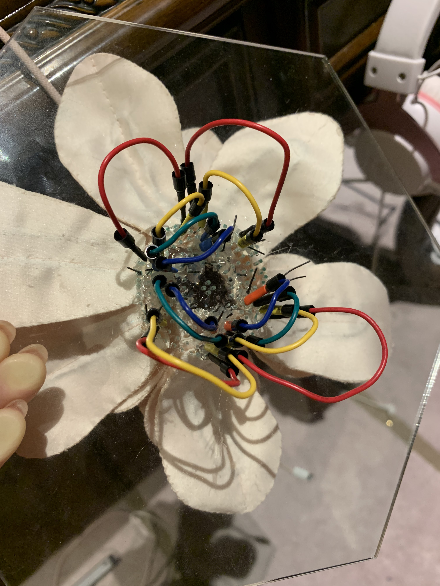
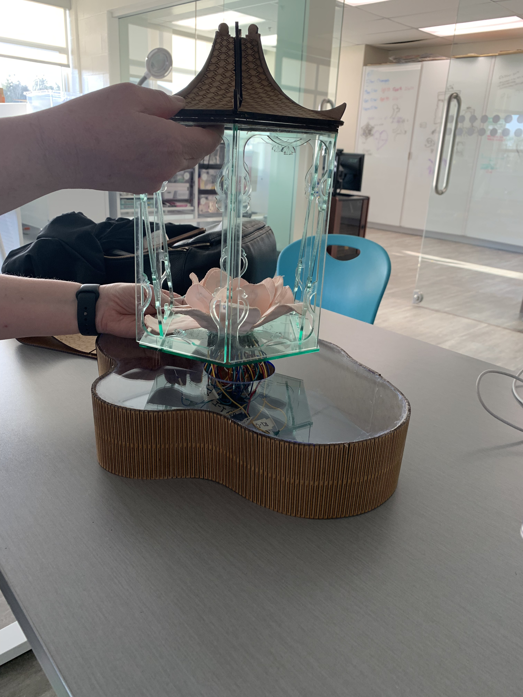

Process key steps
Sketches


Concept sketches and pattern studies for the lantern structure and lotus motifs.
Testing


This phase explored nitinol wire as the core mechanism for the blooming petals. As well as train the nitinol wire to have memory, so that when the wire is heated it will return to its original shape. Along with prototyping different methods of integrating the petals with the wire.
Wiring


This stage focused on internal wiring and circuit integration beneath the lotus and acrylic panels. An ammeter was used to determine the voltage required to activate a single petal, and that value was then calculated and adjusted to support the final number of petals.
Final touches

Finished the frame and shell pieces, along with the lotus, and wooden roof assembled.